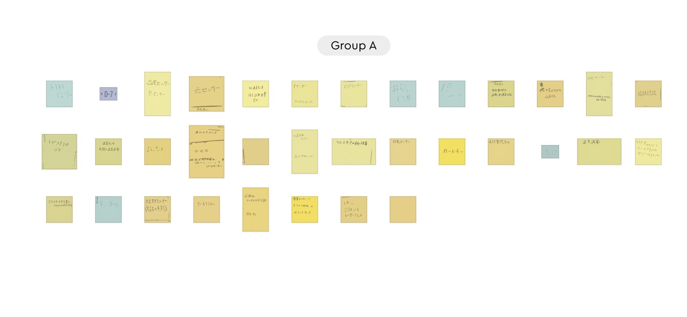

グループで話し合った意見 ポストイット

グループの話し合いで出たアイディアの中で圧力センサと加速度センサを用いたものを考えました。
トンネルでの事故を防ぐために圧力センサを車に搭載してトンネルなどの暗い場所で事故を減らすようなものを考えた。
また、加速度センサを使うことで一定以上の速度になった際にエアバッグがすぐに出て事故を防げるようなモノにした
他の人にもらった意見
車につけるのではなくトンネルに着けた方がいいかも？
事故を防げて良いと思う